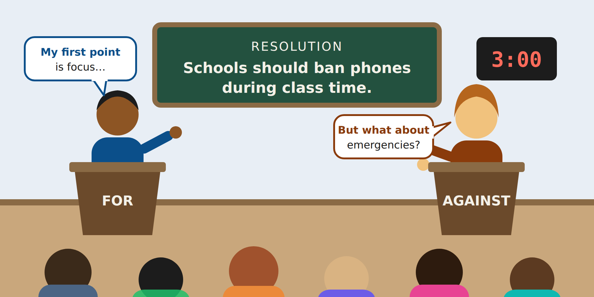

Summative Assessment: Make Your Case
Now it's your turn. Build, support, and defend an argument on a topic you choose, in the format you choose.

What this assessment measures
- Write a claim that takes a clear side on a debatable question.
- Support your claim with evidence and reasoning.
- Answer the other side by rebutting at least one counterargument.
- Present your argument in a clear, organized way.
Choose how you show your understanding
Pick one format. Every format is graded with the same rubric.
| Format | What you create | Requirements |
|---|---|---|
| A. Recorded speech | A video or audio recording of your speech | 3–5 minutes, with captions or a transcript |
| B. Written case | A written argument (essay or debate brief) | 600–900 words |
| C. Visual argument | An annotated slide deck, infographic, or argument map | 6–10 slides or one detailed map, with a written explanation for every part |
| D. Live debate | A short one-on-one debate with a classmate or the teacher | 3-minute speech and 2-minute rebuttal |
Have a different idea? Email your teacher a short proposal before you start. Any format works if it lets you show all four skills.
Instructions
- Choose a resolution from the list below, or propose your own.
- Choose your side and write a one-sentence claim. (Review Part 1: Write a claim)
- Find at least two credible sources. For each, write who made it, when, and why it's credible. (Review Part 2: Evidence and reasoning)
- Build at least two supporting points using Claim–Evidence–Reasoning. The CER graphic organizer worksheet can help you plan.
- Rebut the strongest counterargument using the four-step refutation. (Review Part 3: Answer the other side)
- Create your final product in the format you chose. (Review Part 4: Present your argument)
- Check your work with the self-check list below.
- Submit your work and your source list in [your learning management system] by [due date].
Stuck? Follow the worked example on phones in school, which walks through these same eight steps.
Resolution ideas
- Schools should start no earlier than 8:30 a.m.
- Middle schools should give no more than 30 minutes of homework a night.
- Schools should have a four-day week.
- Students should be required to learn a second language.
- Video games should count as a school sport.
How this assessment matches the lesson
| Objective | Where you learned it | Assessment step | Rubric row |
|---|---|---|---|
| 1. Write a claim | Learn, Part 1 | Step 2 | Claim |
| 2. Support with evidence and reasoning | Learn, Part 2 | Steps 3–4 | Evidence and reasoning |
| 3. Answer the other side | Learn, Part 3 | Step 5 | Counterargument and rebuttal |
| 4. Present your argument | Learn, Part 4 | Step 6 | Organization and delivery |
How you will be graded
The rubric has four rows worth 5 points each, for 20 points total.
| Criterion | 5: Exceeds | 4: Meets | 3: Approaching | 1–2: Beginning |
|---|---|---|---|---|
| Claim | Clear, specific, and takes a firm side. Restated well in the conclusion. | Clear and takes a side. | Takes a side but is vague or loosely tied to the resolution. | Missing, or doesn't take a side. |
| Evidence and reasoning | Two or more credible, cited sources support each point. Reasoning explains exactly how the evidence proves the claim. | Two credible, cited sources. Reasoning connects evidence to the claim. | Evidence is present, but a source isn't credible or cited, or reasoning is unclear. | Little or no evidence, or no explanation of how it supports the claim. |
| Counterargument and rebuttal | The strongest counterargument is stated fairly and rebutted with evidence and reasoning. | A relevant counterargument is stated and rebutted. | A counterargument is stated, but the rebuttal is weak or missing. | No counterargument. |
| Organization and delivery | Flows logically with clear signposts and fits the audience. | Clear beginning, middle, and end; easy to follow. | Structure is there but hard to follow in places. | Disorganized or hard to follow. |
Delivery is judged by what fits your format: pace and clarity for speech, paragraphs and transitions for writing, layout and labels for visuals. It is never judged on accent, speech patterns, or handwriting.
Self-check before you submit
- My claim takes a clear side on the resolution.
- I have at least two points, each with evidence and reasoning.
- I named at least two credible sources.
- I rebutted the strongest counterargument.
- My work has a clear beginning, middle, and end.
- My work meets the length or time for my format.
- If I used video or audio, I added captions or a transcript. If I used images, I added alt text.